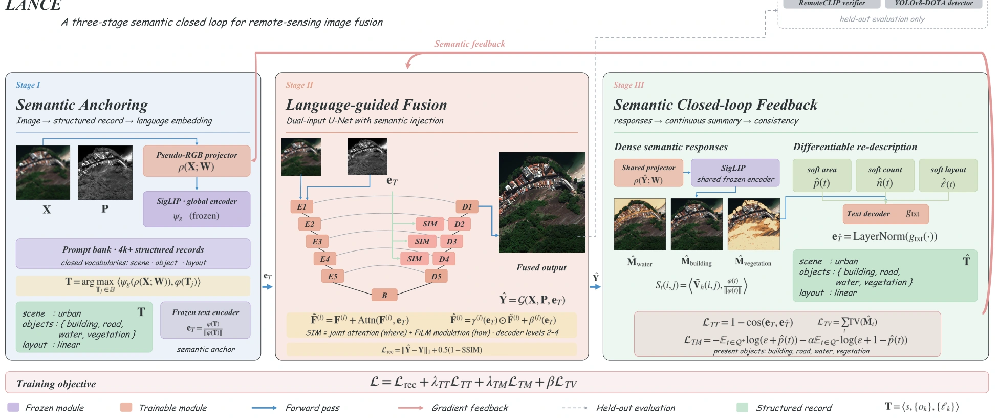
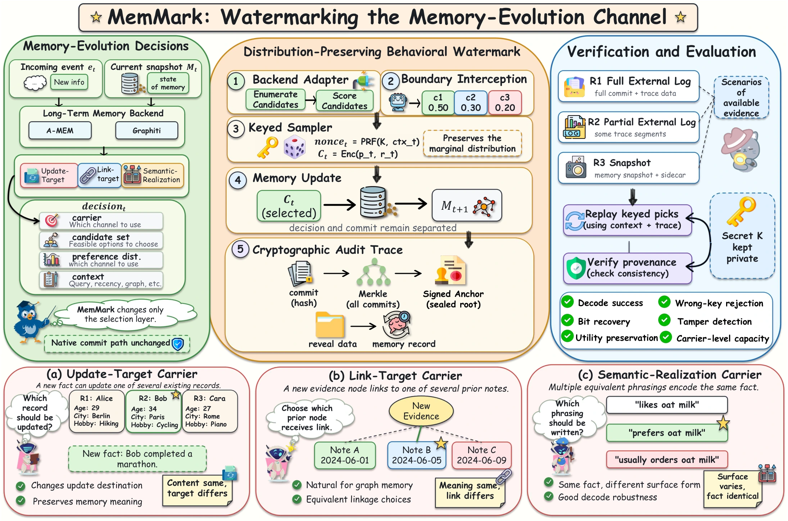
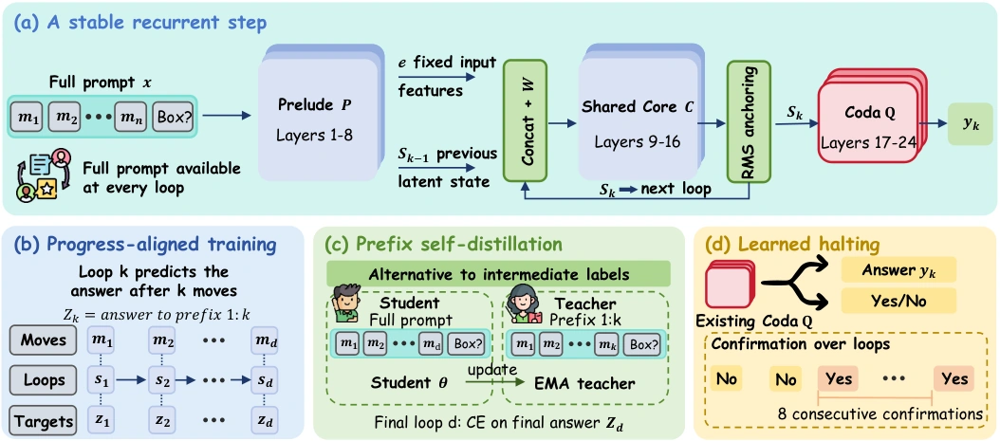
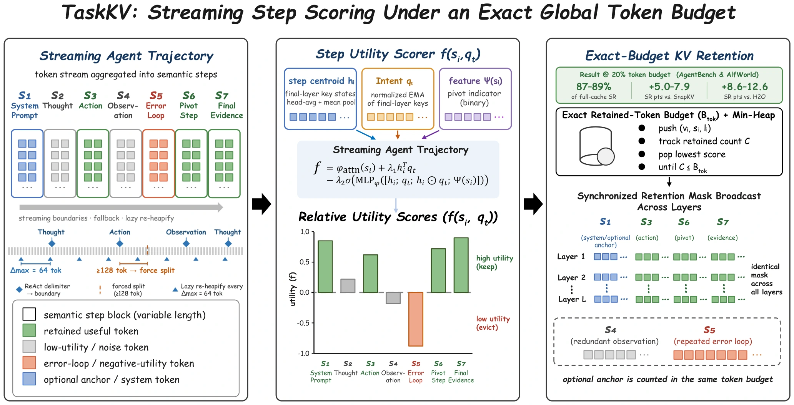
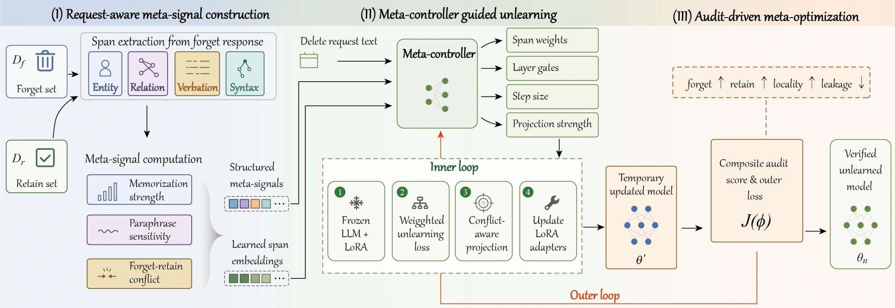

Close the Loop on the Retrievability Gap
Preprint, 2026第一作者
把概念覆盖反馈引入图像复原训练，使生成结果保留可供下游检索与识别的细粒度语义。在独立检索器、检测模型和人工评测中验证，并将训练方法扩展至自然图像与病理图像。
我目前在新加坡国立大学–清华大学 NExT++ 下一代搜索技术联合中心读研，有幸得到沈飞老师和蔡达成教授（Tat-Seng Chua，新加坡科学院院士）的指导。本科期间，我在山东大学 Information Retrieval Lab 与山东省数字媒体技术重点实验室开展科研，师从陈竹敏教授。此后，我在蚂蚁集团技术研究院人工智能实验室、微软亚洲研究院暑校参与研究，并与北京大学等机构的研究者保持合作。
我的研究聚焦 MLLMs、多模态智能与 Agent RL。从早期的图文检索到现在的智能体研究，我一直关注任务相关信息如何被模型保留、更新和使用。相关工作发表于 NeurIPS、EMNLP、ACM MM、ACM CIKM、IEEE TMM、IEEE BIBM 等会议和期刊，共 14 篇，其中一作或通讯论文 8 篇。我也获得了 NeurIPS 2026 Scholar Financial Award。
我相信，更可靠的视觉理解能让 AI 更好地参与真实环境中的任务。目前，我主要沿着以下三个方向开展研究。
Long-term goals. 我希望构建能够持续学习、自主解决开放任务的多模态智能体，继续探索理解与生成的统一建模、Agentic RL 和可扩展推理，并将研究拓展到具身交互、医疗与科学发现。
欢迎交流研究想法，也期待和不同背景的朋友一起开展合作！
以下为代表性工作。完整列表见 Google Scholar。点击图片可查看论文框架。
Preprint, 2026第一作者
把概念覆盖反馈引入图像复原训练，使生成结果保留可供下游检索与识别的细粒度语义。在独立检索器、检测模型和人工评测中验证，并将训练方法扩展至自然图像与病理图像。

NeurIPS 2026通讯 / 项目负责人
通过 activation patching 定位视觉定位与对象幻觉的内部通路，在五种 VLM 上进行因果干预。POPE 对抗测试中的对象幻觉相对减少 40–76%，准确率损失不超过 2 个百分点。

ACM CIKM 2026 · Oral第一作者
以冻结 VLM 提取输入概念，引导图像融合并读回结果中的语义。通过负查询约束伪匹配，验证目标检测与开放词汇定位的改善。

EMNLP 2026第一作者
将共享情感线索与模态特有信息解耦，用离散语义基元连接完整模态教师与缺失模态学生，提升部分观测条件下的情感识别。

NeurIPS 2026学生第二作者
以组织形态构造先验，通过平滑流匹配从 H&E 图像推断空间基因表达。HER2ST 上的表达相关系数达 0.6963，单卡推断耗时由 Stem 的 134 分钟降至 6.6 分钟。

IEEE Transactions on Multimedia, 2026学生第二作者
利用动态原型估计图像与文本之间的语义容量差异，通过跨模态近邻补充未被描述的视觉信息，改善图文匹配与检索排序。

EMNLP 2026第一作者、通讯作者
将验证结论、置信度与时间信息随经验保存，使反馈持续参与记忆写入、检索和冲突处理。在四个基座模型与四个基准的全部组合中，均取得最高成功率及最少平均动作步数。

EMNLP 2026学生第二作者
在记忆更新的选择中嵌入归属水印，支持日志缺失、记忆重写与跨系统迁移后的来源追踪。LoCoMo 上的整体 F1 保留了基线的 99.6%。

NeurIPS 2026合作作者
在想象轨迹上用 GRPO 更新 VLA 策略，再以更新后的策略回报优化世界模型。在五个机器人操作仿真环境中，π₀-3B 平均成功率由 WMPO 的 59.4% 提高至 72.5%。

Preprint, 2026第一作者
用进度对齐监督和隐状态范数锚定稳定循环推理。0.5B 模型最多训练 32 步，在 512 步状态追踪任务上仍达到 95.5% 全状态准确率，并支持可学习停机和前缀自蒸馏。

NeurIPS 2026独立通讯 / 项目负责人
根据历史交互对下一步动作的影响估计缓存效用，以步骤为单位裁剪 KV。在 AgentBench 和 ALFWorld 上，用 20% 的缓存保留全缓存成功率的 87–89%。

NeurIPS 2026通讯 / 项目负责人
根据独立审计反馈学习选择更新层与步长，通过短程 LoRA 更新优化选择性遗忘，在连续删除中兼顾知识保留、改写鲁棒性和隐私泄漏。

IEEE BIBM 2026 · Oral第一作者
按医学问题的专科与推理类型，为低秩适配器选择共享的秩一分量。在四个中英文医学问答基准上验证高效适配及路由结构的可解释性。
硕士阶段科研单位。导师为沈飞老师与蔡达成教授（Tat-Seng Chua，新加坡科学院院士）。主要研究多模态语义建模、检索与模型更新。
蚂蚁集团技术研究院人工智能实验室，科研实习。参与主导 PAR 的问题定义与核心方法设计，主要承担循环训练实现与机制分析，并研究 TaskKV 的动作效用建模与缓存压缩。
微软亚洲研究院暑校科研项目。与不同学校的同学合作研究长上下文推理与多模态学习，后续继续开展对象幻觉、世界模型与模态缺失研究。
Shandong Provincial Key Laboratory of Digital Media Technology
本科期间科研单位，参与山东省数字媒体技术重点实验室联合培养。在陈竹敏教授指导下研究图文检索与跨模态语义对齐，本科毕业设计聚焦小样本细粒度情感分析。
PC Member / Reviewer
Membership IEEE、ACM、ACL、CCF Member。
围棋业余五段，也喜欢萨克斯、游泳、徒步和半程马拉松。本科期间曾担任学生会学术部部长，参与乡村小学支教。